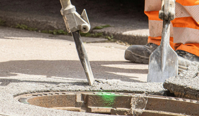
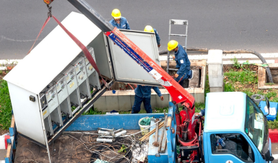

Road Maintenance  Sealing and roadside ditch cleaning, grass cutting, sidewalk and drainage system restoration.
 Installation of telecommunications manholes and cabinets, cable distribution and restoration of areas affected by excavation works. Telecommunications
Civil Construction We transform ideas and spaces into high-quality residential and operational solutions.